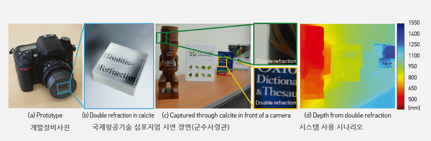

주제별 연구성과
주제별 연구성과
KAIST RESEARCH ACHIEVEMENTS
복굴절을 이용한 3차원
깊이측정 기술
전산학부 김민혁
요약
복굴절이란 한 방향에서 입사한 빛이 편광성분에 따라 매질을 통과할 때 서로 다른 두 방향으로 갈라지는 현상을 말한다. 기존의 일반적인 단일굴절 물질만을 이용하는 카메라 렌즈와는 다르게, 본 연구에서는 복굴절 물질을 카메라 앞에 필터로 장착하고 복굴절 현상을 이용하여 물체의 영상과 더불어 영상의 3차원 깊이 정보를 측정하는 기술을 최초로 제시하였다. 기존의 3차원 영상기술은 깊이를 측정하기 위해 스테레오 카메라 두 대를 기본적으로 필요로 했으나, 본 제안 기술은 단일영상으로부터 고해상도 컬러-깊이 영상을 측정하는데 성공했다. 본 제안 기술은 컬러와 깊이의 동시 측정을 필요로 하는 컴퓨터 그래픽스, AR/VR 장비에 사용되는 새로운 대안으로 대두될 것으로 기대된다.
연구배경
3차원 깊이 측정 기술은 현실 물체의 3차원 모양과 위치를 측정하는 기술로서 무인자동차, VR (virtual reality)/AR (augmented reality), 3D 현미경 등에 필요한 필수적인 분야이다. 기존의 3차원 깊이 측정 시스템은 레이저를 발사하여 물체에 맞고 돌아오는 시간을 측정하는 time-of-flight 기술과 여러 대의 카메라를 사용하여 사진에서 물체의 상대적인 위치를 통해 3차원 깊이를 측정하는 방법으로 나눌 수 있다. 하지만, time-of-flight 기술은 야외에서 태양빛이 강한 야외에서 사용하는데 문제가 있고 여러 대의 카메라를 사용한 상대적 위치 측정 방식은 비용과 크기가 증가한다는 단점이 있다. 단일 카메라에서 한 장의 사진을 이용하여 깊이를 측정하려는 몇몇 시도들이 있어왔지만 기존의 방법들은 정보의 부족으로 인하여 저해상도의 낮은 정확도를 지닌 깊이 정보만을 측정할 수 있었다.
 복굴절 매질을 이용한 단일 이미지로부터의 고해상도 깊이 측정
연구내용
본 연구에서는 기존의 일반 카메라 렌즈에 복굴절 물질을 필터로 장착하여 찍은 한 장의 이미지로부터 고해상도 컬러-깊이 영상을 측정 할 수 있음을 처음으로 선보였다. 복굴절 매질은 해당 매질에 입사한 빛이 편광성분에 따라 두 개의 다른 빛으로 갈라져 나가는 현상을 지니고 있다. 이를 렌즈에 필터 형식으로 장착하게 되면 하나의 물체에서 나온 편광이 다른 두 개의 빛을 카메라를 통하여 찍을 수 있고, 따라서 촬영한 이미지는 두 개의 이미지가 겹쳐진 형태로 나타나게 된다. 이때 하나의 물체는 이미지상의 서로 다른 두 지점에서 동시에 촬영되게 된다. 본 연구에서는 이 두 지점의 위치를 추정하고 서로간의 위치차이를 통하여 해당 물체가 카메라로부터 떨어져있는 거리를 계산하여, 고해상도 깊이 영상과 컬러 영상을 동시에 추정한다. 이를 위하여 (1) 복굴절에 의해 생긴 두 이미지와 물체의 깊이 사이의 관계를 수학적으로 밝히고, (2) 실제 복굴절 매질을 통하여 찍은 한 장의 이미지에서 겹쳐진 두 장의 사진 간의 위치관계를 추정하는 방법을 제안하였다. 최종적으로 기존 카메라에 복굴절 매질의 필터를 장착하여 찍은 한 장의 이미지로부터 고해상도 깊이 영상과 컬러 사진을 동시에 획득할 수 있음을 처음으로 선보였다. (1) 본 연구에서는 하나의 물체가 복굴절에 의해 촬영된 두 지점의 위치와 그 물체의 카메라로부터의 거리에 대한 관계를 기하학적 분석을 통하여 처음으로 밝혔다. 복굴절 매질을 통하여 굴절되는 빛은 기존의 스넬 법칙을 따르는 빛과 스넬 법칙을 따르지 않고 복굴절 매질의 전자기적 성질에 의하여 굴절된 또 하나의 빛으로 나뉘게 된다. 이러한 현상을 카메라에 적용하면 특정 거리에 존재하는 하나의 물체에서 나온 두 개의 빛이 이미지에 맺히는 지점을 계산할 수 있다. 따라서 두 개의 겹쳐진 이미지 사이의 위치 관계와 물체의 카메라로부터의 거리의 관계를 공식화하여 표현 할 수 있다. (2) 다음 단계로 새롭게 제안된 위 이론을 이용해, 복굴절 필터를 장착하여 찍은 한 장의 사진 내에 존재하는 두 장의 겹쳐진 사진 간의 위치 관계를 추정해야한다. 이는 기존 여러 대의 카메라를 사용하여 깊이를 추정하는 방식과는 다르게 한 장의 이미지에 두 장의 사진 정보가 겹쳐져 있다는 점에서 새로운 해결책을 필요로 한다. 따라서 본 연구에서는 두 장의 사진이 겹쳐졌을 때 사진에서 인접한 지점과의 컬러 차이가 얼마나 존재하는지를 분석하고 효율적으로 필터링하는 새로운 알고리즘을 제안하였다. 제안된 이론과 깊이 추정 알고리즘을 기반으로 한 시스템을 통하여 기존 여러 대의 카메라를 사용하여 측정한 깊이정보와 견줄만한 해상도의 깊이 정보를 얻을 수 있음을 보였고, 이는 한 장의 사진만을 이용하여도 높은 해상도의 깊이 정보를 얻을 수 있다는 새로운 가능성을 여는 연구라고 볼 수 있다.깊이 영상을 측정할 수 있는 기술은 현재 다양한 산업분야에서 필요로 되고 있다. 본 연구에서 제안한 복굴절 매질을 이용하여 찍은 한 장의 사진으로부터 정확한 깊이정보를 측정하는 방법은 모바일 카메라, VR/AR, 무인 자동차, 3D 현미경과 같이 시스템의 크기와 비용이 중요한 분야에 쓰일 수 있다.
우수성과 및 기대효과
- 2016 Fall, KAIST Breakthroughs 선정
- U.S. Patent App. 출원, published in Aug. 16, 2016
- 모바일 카메라, VR/AR, 무인 자동차, 현미경과 같이 카메라의 크기와 비용이 중요한 깊이 카메라가 필요한 분야에 사용 가능
참고자료
[논문1] Seung-Hwan Baek, Diego Gutierrez, and Min H. Kim, "Birefractive Stereo Imaging for Single-Shot Depth Acquisition,” ACM Transactions on Graphics (TOG), 35, 6, 194:1-194:11 (2016).
[논문2] Seung-Hwan Baek and Min H. Kim, “Stereo Fusion: Combining Refractive and Binocular Disparity,” Computer Vision and Image Understanding (CVIU), Elsevier, 146, pp. 42-66